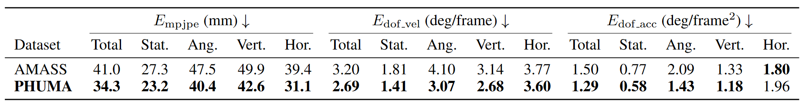

Abstract
Motion imitation is a promising approach for humanoid locomotion, enabling agents to acquire humanlike behaviors. Existing methods typically rely on high-quality motion capture datasets such as AMASS, but these are scarce and expensive, limiting scalability and diversity. Recent studies attempt to scale data collection by converting large-scale internet videos, exemplified by Humanoid-X. However, they often suffer from physical artifacts such as floating, penetration, and foot skating, which hinder stable imitation. To address this, we introduce PHUMA, a Physically Reliable HUMAnoid locomotion dataset produced by a two-stage pipeline combining physics-aware curation and physics-constrained retargeting, aggregating both motion capture and internet video into a physically reliable, 73-hour corpus. On motion tracking benchmarks, PHUMA-trained policies achieve higher success rates than those trained on AMASS and Humanoid-X, and successfully transfer zero-shot to a real Unitree G1.
Overview

Our four-stage pipeline for motion imitation learning includes: (1) Motion Curation, where we filter out problematic motions from a diverse dataset; (2) Motion Retargeting, where the filtered motions are retargeted to the humanoid using PhySINK, incorporating a series of losses.; (3) Policy Learning, where a policy is trained to imitate the retargeted motions; and (4) Inference, where the trained policy is used to control the humanoid, enabling it to imitate motions from unseen videos processed by a video-to-motion model.
Imitation Performance
In motion imitation tasks, we train policies on PHUMA and AMASS, and evaluate them on unseen motions. We use MaskedMimic[2] for training, and all policies are trained on IsaacGym. The videos below show qualitative motion imitation results using the student policy on unseen motions. The ghost represents the reference motion to be imitated. As shown, the policy trained on PHUMA demonstrates better motion imitation performance compared to the policy trained on AMASS.

[2] Tessler et al, MaskedMimic: Unified Physics-Based Character Control Through Masked Motion Inpainting, SIGGRAPH 2024.
Sim-to-Real Performance
For the sim-to-real evaluation, we train two policies—one with PHUMA and one with AMASS—following the BeyondMimic[3] framework, augmented with a motion encoder that takes the future reference motion trajectory as input. Both policies are trained in IsaacSim and evaluated on real-hardware motion tracking using 6 motions from each category (stationary, angular, vertical, and horizontal) of the PHUMA test split. Since no mocap equipment is available in the real-world setup, global translations cannot be recorded; we therefore report local mean per-joint position error (MPJPE, mm) together with DoF velocity (deg/frame) and acceleration (deg/frame2) errors in place of their global counterparts. As shown in the table, the PHUMA-trained policy achieves lower tracking errors across all motion categories.

[3] Liao et al, BeyondMimic: From Motion Tracking to Versatile Humanoid Control via Guided Diffusion, arXiv 2025.
Citation
If you find our work useful, please consider citing the paper as follows:
@article{lee2025phuma,
title={PHUMA: Physically-Grounded Humanoid Locomotion Dataset},
author={Kyungmin Lee and Sibeen Kim and Youngdo Lee and Minho Park and Hyunseung Kim and Dongyoon Hwang and Donghu Kim and Hojoon Lee and Jaegul Choo},
journal={arXiv preprint arXiv:2510.26236},
year={2025},
}